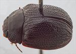
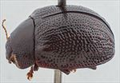
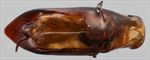
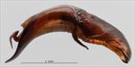
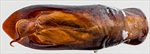
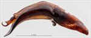
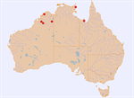

Click on images to enlarge
{kind=link}

Male, Mitchell Plateau, N.W. Western Australia
![Male, Sweers Is, Gulf of Carpentaria, North Queensland [QM]](assets/image/Ta80/Ta80_AGM-128_SM.jpg){kind=link}

Male, Sweers Is, Gulf of Carpentaria, North Queensland [QM]
{kind=link}

Aedeagus, dorsal view (Mitchell Plateau, N.W. Western Australia)
{kind=link}

Aedeagus, lateral view (Mitchell Plateau, N.W. Western Australia)
![Aedeagus, dorsal view (Sweers Is, Gulf of Carpentaria, North Queensland) [QM]](assets/image/Ta80/Ta80_AdGM-128a_SM.jpg){kind=link}

Aedeagus, dorsal view (Sweers Is, Gulf of Carpentaria, North Queensland) [QM]
![Aedeagus, lateral view (Sweers Is, Gulf of Carpentaria, North Queensland) {QM]](assets/image/Ta80/Ta80_AdGM-128b_SM.jpg){kind=link}

Aedeagus, lateral view (Sweers Is, Gulf of Carpentaria, North Queensland) {QM]
{kind=link}

Distribution
Name
Trachymela sp. Ta80
Reference specimen
2007-374, Mitchell Plateau, NW Western Australia.
Adult Description
Length: ♂ 6.0–6.9 mm (n=4), ♀ 6.6–7.8 mm (n=6).
Colouration:
- Head: uniformly dark reddish-brown to almost black, with black-tipped mandibles, labrum yellowish-brown; antennomeres 1–2 light brown, 4–11 either similar or grading slightly (rarely much) darker towards apex.
- Pronotum: uniformly reddish-brown to almost black, concolorous with head, sometimes darker along extreme lateral margins.
- Scutellum: concolorous with adjacent area of pronotum, usually edged with a slightly darker shade.
- Elytra: reddish-brown to almost black, concolorous with pronotum, often uniformly so, sometimes with diffuse areas of slightly darker shade of brown scattered throughout, punctures concolorous with interstices, verrucae and longitudinal ridges sometimes fractionally paler than surrounding surface, humeral callus concolorous with surrounds.
- Venter & Legs: prosternum and thoracic ventrites dark reddish-brown or black, concolorous with dorsal surface, edges of ventrites sometimes slightly darker, legs, abdominal ventrites similar to thoracic or rarely slightly lighter in shade, elytral epipleura brown.
- Cuticular Wax: brown and rather thick over much of dorsal surface.
Morphology:
- Head: punctures moderately sized (pd ≈ 1.5–2× ef) and quite evenly and densely distributed. Antennae short (AL/BL: ♂ 37–41%, ♀ 31–32%), filiform.
- Pronotum: almost evenly curved transversely, minimally explanate at extreme margins, foveal depression absent with a broad, round, slightly elevated area in the same place, discal area smooth, puncturation usually clearly impressed but may be more vaguely impressed partially, mostly similar-sized to those on head and evenly and moderately densely distributed in discal area, punctures becoming much coarser at lateral margins. Front margins join lateral margins in a smoothly rounded right-angle, with lateral margin gently convex for close to half its length then, at widest point of pronotum, becoming almost straight.
- Scutellum: surface smooth or slightly rough, unpunctured.
- Elytra: surface evenly curved transversely over discal region, not explanate at margins or slightly explanate only very close to margin, lightly curved longitudinally in anterior half, then slightly more strongly curved, a barely perceptible depression extends across surface just in front of middle, punctures large and distinct, evenly distributed over almost all of surface, similar in size on margin to disc, interstices convex scattered lightly with very fine punctures, mostly in the form of longitudinal weals that are particularly prominent in apical third, a few isolated verrucae between these weals, surface continuous or slightly discontinuous under humeral callus, lateral margin sinuate. Vertical extension of epipleura small (HCE/PW = 0.27–0.32).
- Venter: prosternal process moderately wide, narrowing very slightly anteriorly, open anteriorly, setae lacking or very sparse along prosternal process, a very few short ones on mesoventrite, a single seta on anterior and median trochanter; front edge of metaventrite beveled, truncate; inner edge of posterior of epipleura lacking setae.
Male Genitalia (Aedeagus):
- Dimensions: moderately sized (LPE/BL = 34–37%).
- Dorsal view: sides of shaft sub-parallel from base to around rear of ostium before converging towards apex, with the angle of convergence increasing slightly near apex to form an extended and broad triangular spatula, dorsal surface smoothly curved with faint and short dorso-median channel, tip clearly protruding, ostium moderate in size.
- Lateral view: ventral surface of shaft quite strongly curved from just anterior to basal sulcus for about ¾ of length, where it straightens out, thinning gradually and evenly from about mid-point to prominent and clearly recurved spatula, flagellum relatively thick at exit from ostium where it curves sharply twice before tapering down in diameter, a membrane (or its remnants) present in the space between where the flagellum exits ostium and the sharp curve.
Immature Stages
Unknown.
Notes
- Host Associations: Individuals of this species have been collected from bloodwood (Corymbia s. lat.) hosts, with the only species-level record being from C. latifolia.
- Morphological Variation: A notable character is the membrane that is stretched across the curving part of the flagellum where it exits the ostium, a structure that is easily damaged when the aedeagus is extracted.
Copyright © 2026. All rights reserved.